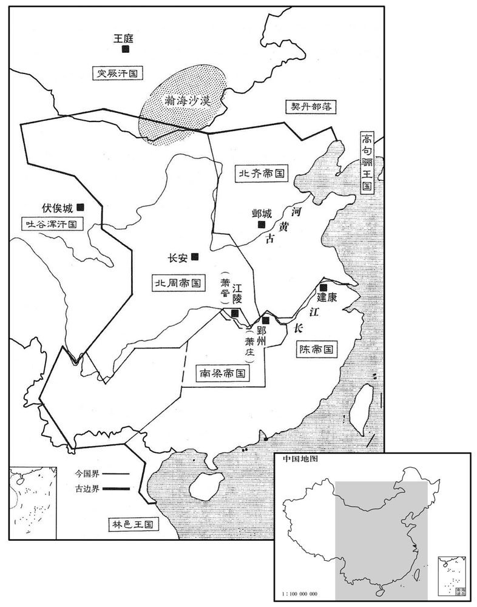
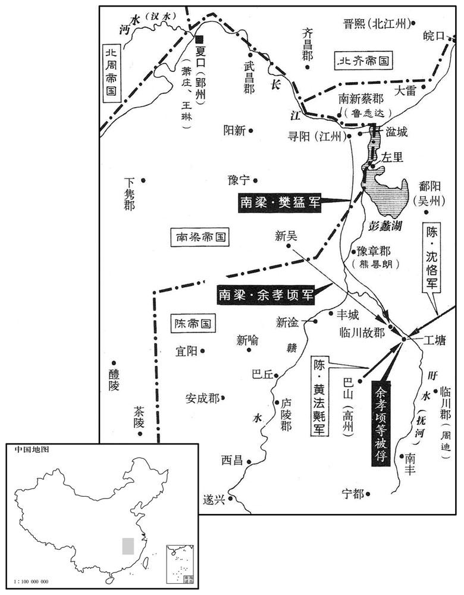

公元558年资治通鉴：本年记事、原文与白话对照
按原书编年位置阅读；追叙和史论不等于本年发生的事件。白话采用所据译本，缺译不以生成译文补齐。
卷167 · 本年记事
公元558年 · 陈高祖武皇帝永定二年
二年〔（戊寅、五五八）〕
上传原文的注释括号有异常，字符原样保留；无法可靠划分的段落默认全文显示。
本年事件索引（现代整理）
- 王琳率军抵达湓城，鲁悉达拒绝归附
- 余孝顷派道林游说王琳先定南川
- 陈朝任侯瑱为司空、欧阳頠为广州刺史
- 北周任宇文护为太师
- 陈武帝祭祀南北郊并大赦
- 周王亲耕藉田
- 北周立独孤氏为王后
- 陈武帝祭祀明堂
- 南豫州刺史沈泰逃奔北齐
- 司马消难因惧北齐猜忌而秘密求降西魏
- 达奚武、杨忠入齐境迎接司马消难归西魏
- 高洋从晋阳返回邺城
- 北齐出兵护送永嘉王萧庄南返，王琳拥立萧庄为帝
- 陈武帝祭太庙
- 陈武帝派人杀死梁敬帝，改立梁武林侯萧谘之子为江阴王
- 北周任宇文护为雍州牧
- 北周王后独孤氏去世
- 北齐大赦天下
- 高洋在西门豹祠祈雨不应，命人毁祠掘墓
- 余孝顷在工塘屯兵二万包围周迪，樊猛与其失和
- 北周任侯莫陈崇为大宗伯
- 北齐广陵南城主张显和、长史张僧那率部投降
- 北齐任高湛录尚书事、杨愔为尚书令
- 陈武帝到大庄严寺舍身，群臣请其还宫
- 高洋北巡并命太子高殷监国
- 陈武帝命侯瑱、徐度率水师讨伐王琳
- 高洋抵达祁连池后返回晋阳
- 陈武帝到石头城送侯瑱出征
- 黄法氍、沈恪、周敷合兵击败余孝顷等人，救援周迪
- 陈武帝派谢哲出使王琳
- 北周大赦天下
- 高洋返回邺城
- 陈武帝派临川王陈蒨率五万水军西征王琳
- 王子晋暗中协助周文育等人逃离王琳军中
- 谢哲出使返回，王琳请求回湘州，陈军停止进攻
- 北周封元罗为韩国公以延续魏祀
- 周王前往同州，随后返回长安
- 周文育奉命出兵讨伐余孝劢
- 高洋更改邺城三台名称并杀死都督尉子辉
- 高演多次规劝高洋酗酒，高洋反复答应戒酒又食言
- 高殷生性温和好学，高洋一度想废太子
- 苏琼审理谋反案时坚持平反冤狱
- 高洋杀害拒绝赴宴的王昕
- 北齐修长城、援萧庄并大兴土木，财政不敷后裁撤官职
- 北齐任可朱浑道元为太师、段韶为司空
- 北周大赦天下
- 高洋杀害囚禁中的高浚、高涣
- 冯宝去世，冯妻冼氏安抚部落并派儿子入朝
- 后梁派王操攻取王琳所属的长沙、武陵、南平

本年形势与背景参考图

本年形势与背景参考图
春，正月，王琳引兵下，至湓城，屯于白水浦，带甲十万。琳以北江州刺史鲁悉达为镇北将军，上亦以悉达为征西将军，各送鼓吹女乐。〔吹，尺瑞翻。」〕悉达两受之，迁延顾望，皆不就；上遣安西将军沈泰袭之，不克。琳欲引军东下，而悉达制其中流，琳遣使说诱，终不从。〔使，疏吏翻。说，式芮翻；下林说同。诱，音酉。〕己亥，琳遣记室宗虩求援于济，〔虩，迄逆翻。〕且请维梁永嘉王庄以主梁祀。〔庄质齐，见上卷梁敬帝绍泰元年。〕衡州刺史周迪欲自据南川，〔自南康至豫章之地，谓之南川，以南江所经言之也。〕乃总召所部八郡守宰结盟，齐言入赴；〔迪所部八郡，南康、宜春、安成、庐陵、临川、巴山、豫章、豫宁也。姚思廉陈书作「声言入赴」。守，式又翻。〕上恐其为变，厚慰抚之。
春季，正月，王琳带兵东下，抵达湓城，驻扎在白水浦，他共带有十万甲兵。王琳任命北江州刺史鲁悉达为镇北将军，陈武帝也任命鲁悉达为征西将军，双方都给鲁悉达送去乐队和女歌舞伎。鲁悉达对两边的委任和礼物都接受下来，行动上却拖延观望，两边的官位都不去就任。陈武帝派安西将军沈泰去袭击他，没有打胜。王琳想带兵东下，而鲁悉达的部队控制着长江中流，王琳派使者去劝说引诱，鲁悉达到最后也不服从。己亥（初五），王琳派记室宗向北齐求援，而且请求迎纳作为质子滞留在北齐的梁朝永嘉王萧庄来主持梁室的祭祀。衡州剌史周迪想自己占据南川，于是就把所属的八郡的太守全部召来结盟，一齐声言要入朝。陈武帝恐怕他们制造变乱，就派人给他们以优厚的慰劳和安抚。
新吴洞主余孝顷遣沙门道林说琳曰：「周迪、黄法鳓皆依附金陵窥间隙，〔鳓，巨俱翻。间，古苋翻。〕大军若下，必为后患；不如先定南川，然后东下，孝顷请席卷所部以从下吏。」〔卷，读曰卷。〕琳乃遣轻车将军樊猛、平南将军李孝钦、平东将军刘广德将兵八千赴之，使孝顷总督三将，屯于临川故郡，〔临川故郡，周敷所屯也。琳遣兵攻迪，并以胁敷。〕征兵粮于迪，以观其所为。
新吴洞主余孝顷派僧人道林去游说王琳，对他说：“周迪、黄法氍都依附了金陵，暗地里却窥伺着机会。您的大军如果东下，这帮人必然成为您的后患。不如先平定南川一带，然后东下，我余孝顷请求带着所有的部下去追随您，在您手下效力。”王琳于是就派轻车将军樊猛、平南将军李孝钦、平东将军刘广德带兵八千人去平定南川，让余孝顷总督他们三人，驻扎在临川故郡，同时向周迪征收兵粮，用以观察他的反应动静。
以开府仪同三司侯瑱为司空，〔衡州刺史欧阳頠为都督交．广等十九州岛诸军事、广州刺史。〔瑱他甸翻。又音镇。頠，鱼委翻。〕
陈朝任命开府仪同三司侯为司空；衡州刺史欧阳为都督交、广等十九州诸军事，广州刺史。
周以晋以护为太师。
两版字句有差异，建议核对原文。
北周任命晋公宇文护为太师。
辛丑，上祀南郊，大赦；乙巳，祀北郊。
辛丑（初七），陈武帝去南郊祭天，大赦天下。乙巳（十一日），去北郊祭地。
辛亥，周王耕藉田。
辛亥（十七日），周王去藉田，举行耕种仪式。
癸丑，周立王后独孤氏。〔后，独孤信之女。〕
癸丑（十九日），北周册立独孤氏为王后。
戊午，上祀明堂。
戊午（二十四日），陈武帝祭祀明堂。
二月，壬申，南豫州刺史沈泰奔齐。〔泰进不能救侯安都之覆败，退不能制鲁悉达之倔强，盖惧罪而北奔也。考异曰：北齐帝纪在八月。今从陈帝纪。〕
二月，壬申（初九），南豫州刺史沈泰投奔北齐。
齐北豫州刺史司马消难，以齐主昏虐滋甚，阴为自全之计，曲意抚循所部。消难尚高祖女，〔难，乃旦翻。齐主尊其父欢庙号高祖。〕情好不睦，公主诉之。〔好，呼到翻。〕上党王涣之亡也，邺中大扰，疑其赴成皋。〔齐北豫州治虎牢，成皋之地也。〕消难从弟子瑞为尚书左丞，〔从，才用翻。〕与御史中丞毕义云有隙，义云遣御史张子阶诣北豫州朿风闻，先禁消难典签家客等。消难惧，密令所亲中兵参军裴藻托以私假，〔假，居讶翻，休假也。〕间行人关，请降于周。〔间，古苋翻；下间道同。降，户江翻。〕
北齐北豫州刺史司马消难看到文宣帝昏昧酷虐越来越厉害，便暗暗谋求自我保全的计策。他用心地安抚稳定自己的部下。司马消难娶的是高祖高欢的女儿，两人感情不和，公主在文宣帝那里诉说他不好。上党王高涣逃跑时，邺城里一片纷乱惊扰，都怀疑他逃到豫州府治成皋去了。 司马消难堂弟的儿子司马瑞任尚书左丞，与御史中丞毕义云有嫌隙，毕义云派御史张子阶到北豫州收集道路传闻，打探消息，去了后先把司马消难的典签官和家客监禁起来。司马消难感到害怕，秘密地命令他所亲信的中兵参军裴藻假托私事请假，抄小路入关，向北周请降。
三月，甲午，周遣柱国达奚武、大将军杨忠帅骑士五千迎消难，〔帅，读曰率。骑，奇寄翻；下同。〕从间道驰入齐境五百里，前后三遣使报消难，皆不报。〔使，疏吏翻。〕去虎牢三十里，武疑有变，欲还，忠曰：「有进死，无退生！」独以千骑夜趣城下。〔趣，七喻翻。〕城四面峭绝，〔峭，七笑翻。〕但闻击柝声。武亲来，麾数百骑西去，忠勒余骑不动，俟门开而入，驰遣召武。齐镇城伏敬远勒甲士二千人据东城，〔镇城，即防城大都督之任。东城，虎牢城之东偏也。北史作「东陴」。〕举烽严警。武惮之，不欲保城，乃多取财物，以消难及其属先归，忠以三千骑为殿。〔殿，丁练翻。〕至洛南，皆解鞍而卧。齐众来追，至洛北，忠洛北，忠谓将士曰：「但饱食，今在死地，贼必，不敢渡水！」已而果然，乃徐引还。武叹曰：「达奚武自谓天下健儿，今日服矣！」周以消难为小司徒。〔唐六典曰：周之地官小司徒，中大夫也。后周依周官。杜佑通典：后周地官小司徒，上大夫，六命。考异曰：北齐帝纪：「四月，消难叛。」今从周书、典略。〕
三月，甲午（初一），北周派柱国达奚武、大将军杨忠率领骑兵五千人去迎接司马消难来降。他们从小路驰入北齐境内五百里，前后三次派遣使者与司马消难联络，都没有联络上。到距离虎牢三十里的地方，达奚武怀疑情况有异变，想返回，杨忠慨然说：“我们只有前进赴死的责任，没有后退求生的道理！”于是独自带一千骑兵连夜赶到城下。虎牢城四面极为高陡，犹如绝壁，只听得城中传来一阵阵击柝的声音。达奚武亲自赶来，指挥几百骑兵退却西去，杨忠指挥剩下的骑兵原地不动，等城门开了进了城，才派人骑快马去叫达奚武。北齐镇守城池的伏敬远指挥甲士二千人据守东城，点燃烽火，严加警戒。达崐奚武感到害怕，不想保住城池，于是就大肆虏掠财物，让司马消难和他的部属先回去，杨忠带三千骑兵殿后。军队行抵洛南，都解开马鞍躺下休息。北齐军队追了过来，到达洛北，杨忠对将士们说：“你们只管吃得饱饱的，现在我们处于必死之地，贼兵怕我们与之拼命，一定不敢渡河来追！”后来果然如杨忠所料，于是才慢慢地引领军队平安回来。达奚武不由感叹地说：“我达奚武自认为是天下健儿，今天在杨忠面前算是服气了！”北周任命司马消难为小司徒。
丁酉，齐主自晋阳还邺。〔考异曰：北齐帝纪：「天保七年八月，帝如晋阳。」不言其还。八年，四月，帝在城东马射，敕京师妇女悉赴观。是在邺也。此月又言「至自晋阳」。六月，乙丑，帝自晋阳北巡，则又复在晋阳。必有差互今不敢增损。〕
丁酉（初四），北齐文宣帝从晋阳回到邺城。
齐发兵援送梁永嘉王庄于江南，册拜王琳为梁丞相、都督中外诸军、录尚书事。琳遣兄子叔宝帅所部十州刺史子弟赴邺。琳奉庄即皇帝位，〔考异曰：北齐帝纪：「十一月，乙巳，琳遣使请立庄，仍以江州内属，令庄居之。十二月，癸酉，诏庄为梁主，进居九泒。」今从陈书及典略。然陈书、典略皆云立庄于酄州。按琳时在湓城。盖始居江州，后迁郢州耳。〕改元天启。追谥建安公渊明曰闵皇帝。〔渊明废见上卷梁敬帝绍泰元年。卒见太平元年。〕蒋以琳为侍中、大将军、中书监，余依齐朝之命。〔朝，直遥翻。〕
北齐派兵援助并护送梁朝永嘉王萧庄回到江南，并册拜王琳为梁朝丞相，都督中外诸军、录尚书事。王琳派其兄的儿子王叔宝率领所统辖十个州刺史的子弟去邺城为人质。王琳拥戴萧庄登上了皇帝位，改年号为天启。追谥建安公萧渊明为闵皇帝。萧庄任命王琳为侍中、大将军、中书监，其余官职依照北齐的册命。
夏，四月，甲子，上享太庙。
夏季，四月，甲子（初二），陈武帝向太庙供献祭品。
乙丑，上使人害梁敬帝，立梁武林侯谘之子季卿为江阴王。
乙丑（初三），陈武帝派人杀害了梁敬帝，立梁朝武林侯萧谘的儿子萧季卿为江阴王。
己巳，周以太师护为亥州牧。〔后周雍州牧，九命。雍，于用翻。〕
己巳（初七），北周任命太师宇文护为雍州牧。
甲戌，周王后独孙氏殂。
两版字句有差异，建议核对原文。
甲戌（十二日），周王王后独孤氏去世。
辛巳，齐大赦。
辛巳（十九日），北齐大赦天下。
齐主以旱祈雨于西门豹祠，不应，毁之，并掘其耱。〔战国时，魏以西门豹为邺令，凿十二渠以利民，故祠、耱皆在邺。〕
北齐文宣帝因为天旱在西门豹祠前祈雨，不灵验，于是毁了西门豹祠，并挖开了他的坟墓。
五月，癸巳，余孝顷等屯二万军于工塘，连八城以逼周迪。〔「等」下有「众」字，文意乃畅。〕迪惧，请和，并送兵粮。樊猛等欲受盟而还；〔还，从宣翻，又如字。〕孝顷贪其利，不许，树栅围之。由是猛等与孝顷不协。
五月，癸巳（初一），余孝顷在工塘屯驻了两万军队，连结八城的兵力以逼临周迪的驻地。周迪害怕了，请求讲和，并送兵粮给余孝顷。樊猛等将想接受和好的盟约收兵回去，但余孝顷贪图出兵之利，不许樊猛等退去，树起栅栏围住他们。以此樊猛与余孝顷开始不和。
周以大司空侯莫陈崇为大宗伯。
北周任命大司空侯莫陈崇为大宗伯。
癸丑，齐广陵南城主张显和、长史张僧那各帅所部来降。〔帅，读曰率。降，户江翻。〕
癸丑（二十一日），北齐广陵南城城主张显和，长史张僧那各自率领所属部队来投降陈朝。
辛丑，齐以尚书令长广王湛录尚书事，骠骑大将军平秦王归彦为尚书左仆射。〔骠，匹妙翻。骑，奇寄翻。〕甲辰，以前左仆射杨愔为尚书令。
辛丑（疑误），北齐任命尚书令长广王高湛为录尚书事，骠骑大将军平秦王高归彦为尚书左仆射。甲辰（疑误），任命前左仆射杨为尚书令。
辛酉，上幸大庄严寺舍身；〔前车覆矣，后车不知戒。耳目习于事佛，不知其非也。〕壬戌，群臣表请还宫。
辛酉（二十九日），陈武帝驾临大庄严寺向佛祖舍身。壬戌（三十日），群臣上表请皇上回宫。
六月，乙丑，齐主北巡，以太子殷监国，〔监，工衔翻。〕因立大都督府与尚书省分理众务，仍开府置佐。齐主特崇其选，以赵郡王叡为侍中、摄大都督府长史。
六月，乙丑（初三），北齐文宣帝到北方巡视，委托太子高殷监理国事，因此设立大都督府与尚书省分头处理众多事务，同样开府办公，设置官佐崐。北齐文宣帝特别看重大都督府的人选，任命赵郡王高睿为侍中、摄大都督府长史。
己巳，诏司空侯瑱与领军将军徐度帅舟师为前军以讨王琳。〔帅，读曰率。〕
己巳（初七），陈武帝下诏命令司空侯与领军将军徐度率领水师为前头部队去讨伐王琳。
齐主至祁连池；〔祁连池，即汾阳之天池，北人谓天为祁连。〔戊寅，还晋阳。〕
本段缺少可靠对应白话，原文完整保留；未使用生成译文。
秋，戊，戍上幸石头，送侯瑱等。〔秋七月戊戌也。〔【章：十二行本正有「七月」二字；乙十一行本同；孔本同。】〕
两版字句有差异，建议核对原文。
秋季，七月，戊戌（初七），陈武帝驾临石头，送侯等出师。
高州刺史黄法鳓、吴兴太守沈恪、宁州刺史周敷〔时盖即临川故郡置宁州，以敷为刺史。〕合兵救周迪。敷自临川故郡断江口，〔断，音短。〕分兵攻余孝顷别城。樊猛等不救而没；刘广德乘流先下，故获全。孝顷等皆弃舟引兵步走，迪追击，尽擒之，送孝顷及李孝钦于建康，归樊猛于王琳。
高州刺史黄法氍、吴兴太守沈恪、宁州刺史周敷联合出兵救援周迪。周敷从临川故郡切断江口，分兵攻打余孝顷的别城。樊猛等不去救援，别城陷落。刘广德先一步乘流而下，所以得到保全。余孝顷等都扔掉船只带兵士步行，周迪发兵追击，把他们全抓获了。余孝顷及李孝饮被送往建康，樊猛则归还了王琳。
甲辰，上遣吏部尚书谢哲往谕王琳。哲，朏之孙也。〔谢朏，庄之子，历仕宋、齐、梁。朏，敷尾翻。〕
甲辰（十三日），陈武帝派吏部尚书谢哲去宣谕王琳。谢哲是谢的孙子。
八月，甲子，周大赦。
八月，甲子（初三），北周大赦天下。
乙丑，齐主还邺。
乙丑（初四），北齐文宣帝回到邺城。
辛未，未诏临川王蒨西讨，〔蒨，仓甸翻。〕以舟师五万发建康，上幸冶城寺送之。
辛未（初十），陈武帝下诏派临川王陈出兵向西讨伐，共有水军五万人从建康出发，陈武帝亲临冶城寺为陈送行。
王琳在白水浦，周文育、侯安都、徐敬成许王子晋以厚赂，子晋及伪以小船依鵺而钓，〔鵺，音榻。〕夜，戴之上岸，入深草中，步投陈军，还建康自劾；上引见，并宥之，〔上，时掌翻。劾，户概翻，又户得翻。见，贤遍翻。〕戊寅，复其本官。〔文育、安都败军而不诛，遽复其官，何也﹖二人当时名将，诛之则无以为用故也。〕
王琳在白水浦，周文育、侯安都、徐敬成答应给王子晋丰厚的财物，王子晋于是就假装乘小船靠近大船垂钓，夜里，把周文育等人用小船载上岸，藏入深草丛中，让他们得以步行回去投奔陈朝军队，并回建康请罪自劾。陈武帝接见了他们，一起宽宥了他们的兵败之罪。戊寅（十二日），恢复了他们原来的官职。
谢哲返命，王琳请还湘州，诏追众军还。癸未，众军至自大雷。
谢哲从王琳处回朝复命，王琳请求回到湘州去，陈朝下诏追回出征的军队。癸未（十七日），众军从大雷回来。
九月，甲申，〔【严：「申」改「辰」。】〕周封少师元罗为韩国公以绍魏后。〔江陵之陷，元罗还魏。〕
九月，甲申（疑误），北周封少师元罗为韩国公以继承西魏的香火。
丁未，周王如同州；冬，十月，辛酉，还长安。
丁未（十六日），周王去同州。冬季，十月，辛酉（初一），回到长安。
余孝顷之弟孝劢及子公扬犹据旧栅不下；〔新吴旧栅也。劢，音遇。扬，余章翻。〕庚午，诏开府仪同三司周文育都督众军出豫章讨之。
余孝顷的弟弟余孝劢及其子余公仍然据守旧营栅不投降。康午（初十），陈武帝诏命开府仪同三司周文育都督众军从豫章出发去讨伐他们。
齐三台城，更名铜爵曰金凤，金虎曰圣应，冰井曰崇光。〔魏武筑三台于邺城西北，皆因城为之基；中曰铜爵台，高十丈，石虎更增二丈；南曰金虎台，北曰冰井台，皆高八丈。更，工衡翻。〕十一月，甲午，齐主至邺，大赦。齐主游三台，戏以槊刺都督尉子辉，应手而毙。〔槊，色角翻。刺，七亦翻。考异曰：北史作「子耀」。今从北齐书、典略。〕
北齐建成三台，把铜爵台改名叫金凤台，金虎台改叫圣应台，冰井台改叫崇光台。十一月，甲午（初五），北齐国主到了邺城，大赦天下。北齐文宣帝游览三台，戏用槊刺都督尉子辉，一下子就把他刺死了。常山王演以帝沈湎，忧愤形于颜色。帝觉之，曰：“但令汝在，我何为不纵乐！”演唯涕泣拜伏，竟无所言。帝亦大悲，抵杯于地曰：“汝似嫌我如是，自今敢进酒者斩之！”因取所御杯尽坏弃。未几，沈湎益甚，或于诸贵戚家角力批拉，不限贵贱，唯演至，则内外肃然。演又密撰事条，将谏，其友王以为不可；演不从，因间极言，遂逢大怒。演性颇严，尚书郎中剖断有失，辄加捶楚，令史奸慝即考竟。帝乃立演于前，以刀环拟胁，召被演罚者，临以白刃，求演之短；咸无所陈，乃释之。，昕之弟也。帝疑演假辞于以谏，欲杀之。王私谓曰：“王博士，明日当作一条事，为欲相活，亦图自全，宜深体勿怪。”乃于众中杖二十。帝寻发怒，闻得杖，以故不杀，髡鞭配甲坊。居三年，演又因谏争，大被殴挞，闭口不食。太后日夜涕泣，帝不知所为，曰：“傥小儿死，奈我老母何！”于是数往问演疾，谓曰：“努力强食，当以王还汝。”乃释，令诣演。演抱曰：“吾气息然，恐不复相见！”流涕曰：“天道神明，岂令殿下遂毙此舍！至尊亲为人兄，尊为人主，安可与计！殿下不食，太后亦不食，殿下纵不自惜，独不念太后乎！”言未卒，演强坐而饭。由是免徒，还为王友。及演录尚书事，除官者皆诣演谢，去必辞。言于演曰：“受爵天朝，拜恩私第，自古以为不可，宜一切约绝。”演从之。久之，演从容谓曰：“主人起居不恒，卿宜耳目所具，吾岂可以前逢一怒，遂尔结舌。卿宜为撰谏草，吾当伺便极谏。”遂条十馀事以呈，因谓演曰：“今朝廷所恃者惟殿下，乃欲学匹夫耿介，轻一朝之命！狂药令人不自觉，刀箭岂复识亲疏，一旦祸出理外，将奈殿下家业何，奈皇太后何！”演欷不自胜，曰：“乃至是乎！”明日，见曰：“吾长夜久思，今遂息意。”即命火，对焚之。后复承间苦谏，帝使力士反接，拔白刃注颈，骂曰：“小子何知，是谁教汝？”演曰：“天下噤口，非臣谁敢有言！”帝趣杖，乱捶之数十；会醉卧，得解。帝亵黩之游，遍于宗戚，所往留连；唯至常山第，多无适而去。尚书左仆射崔暹屡谏，演谓暹曰：“今太后不敢言，吾兄弟杜口，仆射独能犯颜，内外深相感愧。”
常山王高演因为文宣帝沉溺于酒，忧愤形于颜色。文宣帝发觉了，说：“只要你在，我为什么不纵情取乐！”高演只有痛哭流涕，拜伏在地，竟一句话也说不出来。文宣帝也大放悲声，把酒杯扣在地上说：“你似乎嫌我这样酗酒，从今以后，谁敢把酒进献到我这儿来就斩首！”于是把自己用的酒杯拿来，全摔坏扔了。但是没过多久，文宣帝酒喝得更凶了。有时在贵戚们家里边喝酒边摔跤角斗，不分贵贱，但是只要高演一来，则内外肃然，谁也不敢出声。高演又秘密地撰与了条陈，准备再次进谏，常山王王以为不可行，高演不听，找到个机会就激动地说了个痛快，于是遭到文宣帝的怒斥。高演为人很严苛，他手下的尚书郎中判断处理事情一有失误，他就下令鞭打，令史们如有作奸犯科就拷死狱中。文宣帝让高演站在自己面前，用刀环比着他的肋下，威胁着要砍死他。又把高演责罚过的人叫来，用雪亮的刀刃加在他们脖子上，逼他们说出高演的短处；但这些人都表示没有什么可说的，于是就释放了他们。王是王昕的弟弟。文宣帝怀疑高演是在王那儿学到一些说辞才来进谏的，就想杀了王。高演私下对王说：“王博士，明天我将作一件事，为了让你活命，也求得我能自全，希望您深切地体会我的苦心，别责怪我。”于是当着众人打了王二十杖。文宣帝不久发怒，听说王被打，反而不杀他了，只剃掉他的头发，鞭打一顿，配在兵器坊服役。过了三年，高演又因进谏的事和文宣帝争执起来，被狠狠地鞭挞了一顿，高演闭口绝食。太后心疼儿子，日夜哭泣，文宣帝慌了，不知该怎么办，自言自语地说：“如果让这小子死了，那可拿我老母亲怎么办呢？”于是多次去问候高演病体如何，对他说：“你如果努力把饭咽下去，我就把王放出来还给你。”于是就释放了王，叫他去看望高演。高演抱着王说：“我自觉气短乏力，恐怕再也不能相见了。”王痛哭流涕说：“天道神明，降福善类，降祸恶人，了了分明，难道会让殿下就这样死在这间屋里！皇上论亲是您兄长，论尊是您主子，怎么能和他计较是非呢！殿下不进食，太后亦不进食，殿下即使不爱惜自己的生命，难道就不挂念太后吗？”话还没说完，高演就已经勉力坐起来吃饭了。王因此免去配兵器坊服役的徒刑，回到高演府中任原职。待到高演任录尚书事的时候，得到官职的人都去拜见高演表示谢意，离去时也都来向高演辞行。王对高演说：“从天朝那儿接受官爵，却到私人第宅去拜谢恩情，自古以来就认为这是不可以的，应该拒绝一崐切这类的拜会约见。”高演听从了他的意见。过了很久，高演从容地对王说：“皇上饮食起居没有规律，您应该多听多看，准备点材料，我怎么可以因为以前遇上一次盛怒，就从此钳口结舌呢？您得为我起草谏书，我准备寻找机会极力劝谏。”王于是就列举了十几件事呈给高演，同时对高演说：“现在朝廷所能依靠的人，也只有殿下您了。而您竟想学匹夫的耿直坦率，轻掷自己贵重生命于一早上！酒这种狂药让人失去理智，行为鲁莽灭裂而不自知，皇上一旦发酒疯震怒起来，刀箭哪里认得亲和疏！一旦灾祸出于常理之外而降临，将拿殿下的家业怎么办呢？将拿皇太后的安危怎么办呢？”高演听了这番话，欷感叹，悲不自胜，说：“难道真的到了这种地步了吗？”第二天，高演见了王，说：“我昨夜想了一夜，今天终于打消了犯颜极谏的念头。”于是就命人拿火来，当着王的面，把进谏的条陈烧了。后来高演又一次乘机会苦苦进谏，文宣帝命令左右力士把高演的双手反剪过来按住，拔出雪白的刀搁在他脖子上，骂道：“小子知道个啥？是谁在背后教你来进谏的？”高演说：“天下都震慑于您的淫威不敢出声，不是我谁还敢有话！”文宣帝奔过去拿起木杖，对高演乱打了几十下，打着打着正好醉倒了，高演才得到解脱。文宣帝好作淫邪的游幸，凡宗戚之家，他几乎全去遍了。去了一个地方，就耽于淫乐，留连忘返。唯有到常山王家，多半不能尽欢，只好离去。尚书左仆射崔暹屡次进谏，高演对崔暹说：“现在太后不敢说话，我的兄弟们也都闭了嘴，仆射却独能犯颜进谏，宫廷内外对此都深深感动而且感到惭愧。”
常山王演以帝沈湎，忧愤形于颜色。帝觉之，曰：「但令汝在，我何为一纵乐！」〔沈，持林翻。乐，音洛。〕演唯涕泣拜伏，竟无所言。帝亦大悲，抵杯于地曰：「汝似嫌我如是，自今敢进酒者斩之！」因取所御杯尽坏弃。〔坏，音怪。〕未几，沈湎益甚，或于诸贵戚家角力批拉，〔几，居岂翻。沈，持林翻。批，白结翻，又偏迷翻，手击也。拉，卢合翻。〕不限贵贱，唯演至，则内外肃然。演又密撰事条，将谏，其友王晞以为不可；〔诸王宫寮有师有友。〕演不从，因间极言，〔间，古苋翻。〕遂逢大怒。演性颇严，尚书郎中剖断有失，〔断，丁乱翻。〕辄加捶楚，令史奸慝即考竟。〔演为尚书令故然。捶，止药翻。〕帝乃立演于前，以刀镮拟胁，〔以刀镮拟演胁，示将筑杀之。〕召被演罚者，〔被，皮义翻。〕临以白刃，求演之短；咸无所陈，乃释之。晞，昕之弟也。〔王昕见下。昕，许斤翻。〕帝疑演假辞于晞以谏，欲杀之。王私谓晞曰：〔王，即演也。通鉴因齐史，修治有未纯者耳。〕「王博士，明日当作一条事，为欲相活，〔为，于伪翻。〕亦图自全，宜深体勿怪。」乃于众中杖晞二十。帝寻发怒，闻晞得杖，以故不杀，〔以其得杖之故，谓非教演为之，遂不杀。〕髡鞭配甲坊。居三年，演又因谏争，大被殴挞，〔争，读曰诤。被，皮义翻。殴，乌口翻。考异曰：北史孝昭纪云：「文宣赐帝魏时宫人，醒而忘之，谓帝擅取，遂令刀镮乱筑，因此致困。」今从北史王晞传。〕闭口不食。太后日夜涕泣，帝不知所为，曰：「傥小儿死，柰我老母何！」于是数往问演疾，谓曰：「努力强食，〔数，所角翻。强，其两翻；下强坐同。〕当以王晞还汝。」乃释晞，令诣演。演抱晞曰：「吾气息惙然，〔惙，丑捩翻；类篇曰：困劣也。〕恐不复相见！」〔复，扶又翻。〕晞流涕曰：「天道神明，岂令殿下遂毙此舍！〔言天道福善祸淫，不应使演遂死于此。〕至尊亲为人兄，尊为人主，安可与计！〔言难与计是非也。〕殿下不食，太后亦不食，殿不纵不自惜，独不念太后乎！」言未卒，演强坐而饭。〔卒，子恤翻。饭，扶晚翻。〕晞由是免徒，〔配甲坊，徒刑也，由此得免。〕还为王友。及演录尚书事，除官者皆诣演谢，去必辞。晞言于演曰：「受爵天朝，拜恩私第，〔晋羊佑之言。朝，直遥翻。〕自古以为不可，宜一切约绝。」演从之。久之，演从容谓晞曰：「主上起居不恒，卿宜耳目所具，吾岂可以前逢一怒，遂尔结舌。卿宜为撰谏草，〔从，千容翻。恒，户登翻。为，不伪翻。〕吾当伺便极谏。」〔伺，相吏翻。〕晞遂条十余事以呈，因谓演曰：「今朝廷所恃者惟殿下，乃欲学匹夫耿介，轻一朝之命！狂药令人不自觉，〔狂药，谓酒也。〕刀箭岂复识亲疏，〔复，扶又翻〕一百祸出理外，将柰殿下家业何，柰皇太后何！」演欷歔不自胜，〔欷，音希，又许气翻。歔，音虚。胜，音升。〕曰：「及至是乎！」明日，见晞曰：「吾长夜久思，今遂息意。」即命火，对晞焚之。〔焚谏草也。〕后复承间苦谏，帝使力士反接，〔复，扶又翻。间，古苋翻。反接两手向后也。〕拔白刃注颈，骂曰：「小子何知，是谁教汝﹖」演曰：「天下噤口，非臣谁敢有言！」帝趣杖，乱捶之数十；〔噤，巨禁翻。趣，读曰促。〕会醉卧，得解。帝亵黩之，游于宗戚，所往留连；〔盘乐忘返，谓之留连。〕唯，至常山第，多适而去。〔适，欢极也。〕尚书左仆射崔暹屡谏，演谓暹曰：「今太后不敢言，吾兄弟杜口，仆射独能犯颜，内外深相感愧。」〔常山，齐之贤王；文宣淫酗，规正为多。齐之史臣因其嗣祚，亦多溢美。观者能于辞令之间详其溢美者则几矣。〕
常山王高演因为文宣帝沉溺于酒，忧愤形于颜色。文宣帝发觉了，说：“只要你在，我为什么不纵情取乐！”高演只有痛哭流涕，拜伏在地，竟一句话也说不出来。文宣帝也大放悲声，把酒杯扣在地上说：“你似乎嫌我这样酗酒，从今以后，谁敢把酒进献到我这儿来就斩首！”于是把自己用的酒杯拿来，全摔坏扔了。但是没过多久，文宣帝酒喝得更凶了。有时在贵戚们家里边喝酒边摔跤角斗，不分贵贱，但是只要高演一来，则内外肃然，谁也不敢出声。高演又秘密地撰与了条陈，准备再次进谏，常山王王以为不可行，高演不听，找到个机会就激动地说了个痛快，于是遭到文宣帝的怒斥。高演为人很严苛，他手下的尚书郎中判断处理事情一有失误，他就下令鞭打，令史们如有作奸犯科就拷死狱中。文宣帝让高演站在自己面前，用刀环比着他的肋下，威胁着要砍死他。又把高演责罚过的人叫来，用雪亮的刀刃加在他们脖子上，逼他们说出高演的短处；但这些人都表示没有什么可说的，于是就释放了他们。王是王昕的弟弟。文宣帝怀疑高演是在王那儿学到一些说辞才来进谏的，就想杀了王。高演私下对王说：“王博士，明天我将作一件事，为了让你活命，也求得我能自全，希望您深切地体会我的苦心，别责怪我。”于是当着众人打了王二十杖。文宣帝不久发怒，听说王被打，反而不杀他了，只剃掉他的头发，鞭打一顿，配在兵器坊服役。过了三年，高演又因进谏的事和文宣帝争执起来，被狠狠地鞭挞了一顿，高演闭口绝食。太后心疼儿子，日夜哭泣，文宣帝慌了，不知该怎么办，自言自语地说：“如果让这小子死了，那可拿我老母亲怎么办呢？”于是多次去问候高演病体如何，对他说：“你如果努力把饭咽下去，我就把王放出来还给你。”于是就释放了王，叫他去看望高演。高演抱着王说：“我自觉气短乏力，恐怕再也不能相见了。”王痛哭流涕说：“天道神明，降福善类，降祸恶人，了了分明，难道会让殿下就这样死在这间屋里！皇上论亲是您兄长，论尊是您主子，怎么能和他计较是非呢！殿下不进食，太后亦不进食，殿下即使不爱惜自己的生命，难道就不挂念太后吗？”话还没说完，高演就已经勉力坐起来吃饭了。王因此免去配兵器坊服役的徒刑，回到高演府中任原职。待到高演任录尚书事的时候，得到官职的人都去拜见高演表示谢意，离去时也都来向高演辞行。王对高演说：“从天朝那儿接受官爵，却到私人第宅去拜谢恩情，自古以来就认为这是不可以的，应该拒绝一崐切这类的拜会约见。”高演听从了他的意见。过了很久，高演从容地对王说：“皇上饮食起居没有规律，您应该多听多看，准备点材料，我怎么可以因为以前遇上一次盛怒，就从此钳口结舌呢？您得为我起草谏书，我准备寻找机会极力劝谏。”王于是就列举了十几件事呈给高演，同时对高演说：“现在朝廷所能依靠的人，也只有殿下您了。而您竟想学匹夫的耿直坦率，轻掷自己贵重生命于一早上！酒这种狂药让人失去理智，行为鲁莽灭裂而不自知，皇上一旦发酒疯震怒起来，刀箭哪里认得亲和疏！一旦灾祸出于常理之外而降临，将拿殿下的家业怎么办呢？将拿皇太后的安危怎么办呢？”高演听了这番话，欷感叹，悲不自胜，说：“难道真的到了这种地步了吗？”第二天，高演见了王，说：“我昨夜想了一夜，今天终于打消了犯颜极谏的念头。”于是就命人拿火来，当着王的面，把进谏的条陈烧了。后来高演又一次乘机会苦苦进谏，文宣帝命令左右力士把高演的双手反剪过来按住，拔出雪白的刀搁在他脖子上，骂道：“小子知道个啥？是谁在背后教你来进谏的？”高演说：“天下都震慑于您的淫威不敢出声，不是我谁还敢有话！”文宣帝奔过去拿起木杖，对高演乱打了几十下，打着打着正好醉倒了，高演才得到解脱。文宣帝好作淫邪的游幸，凡宗戚之家，他几乎全去遍了。去了一个地方，就耽于淫乐，留连忘返。唯有到常山王家，多半不能尽欢，只好离去。尚书左仆射崔暹屡次进谏，高演对崔暹说：“现在太后不敢说话，我的兄弟们也都闭了嘴，仆射却独能犯颜进谏，宫廷内外对此都深深感动而且感到惭愧。”
太子殷，自幼温裕开朗，礼士好学，〔好，呼到翻。〕关览时政，甚有美名。帝尝嫌太子得汉家性质，不似我，欲废之。〔鲜卑谓中国人为汉。〕帝登金凤台笸太子，使手刃囚；太子恻然有难色，再三，不断其首。帝大怒，亲以马鞭撞之，〔断，丁管翻。撞，直江翻。〕太子由是气悸语吃，〔悸，其季翻。吃，居乞翻，言蹇也。〕精神昏扰。帝因酣宴，屡云：「太子性懦，社稷事重，终当传位常山。」太子少傅魏收谓杨愔曰：「太子，国之根本，不可动摇。至尊三爵之后，每言传位常山，令臣不疑贰。若其实也，当决行之。此言非所以为戏，恐徒使国家不安。」愔以收言白帝，帝乃止。
太子高殷，自幼温和从容，性格开朗，礼贤下士，笃志好学，关心留意时政，很有美名。文宣帝曾经嫌太子“得了汉人的秉性气质，一点都不象我”，想把他废了。一次，文宣帝登上金凤台召见太子，让太子亲手用刀杀一个囚犯 ，太子心怀怜悯，面有难色，试了好几回，砍不断囚犯 的头。文宣帝勃然大怒，亲自动手用马鞭去撞击他，太子从此受惊吓，说话结巴，神志不清。文宣帝趁着宴会上酒酣时，多次说：“太子性格懦弱，社稷大事很重要，怕他承当不了，看样子最后还是应当传位给常山王高演。”太子少傅魏收对杨说：“太子，是国家的根本，不可以轻易动摇他。皇上喝了三杯酒后，老是说要传位给常山王，以致让臣下惑乱疑虑，怀有二心。如果真的实有其事，就应当果断地实行。这种传位给谁的话可不是闹着玩的，老这样说恐怕会徒然使国家不安定。”杨把魏收的话转告文宣帝，文宣帝才停止这样说了。
帝既残忍，有司讯囚，莫不严酷，或烧犁耳，使立其上，或烧车釭，〔釭，姑红翻，车毂中铁也。〕使以臂贯之，既不胜苦，皆至诬伏。〔胜，音升。〕唯三公郎中武强苏琼，〔三公郎，自魏、晋以来有之。五代志：后齐尚书列曹，三公郎中属殿中尚书，掌五时读时令、诸曹囚帐、断罪、赦日建金鸡等事。刘昫曰：武强，汉武隧县，属河间国；晋改曰武强，属安平国；后魏属广宗郡，又置武邑郡。五代志曰：齐废郡为武强县，至隋，属信都郡。〕历职中外，所至皆以宽平为治。〔治，直吏翻。〕时赵州及清河屡有人告谋反者，前后皆付琼推检，事多申雪。尚书崔昂谓琼曰：「若欲立功名，当更思余理；数雪反逆，〔数，所角翻。〕身命何轻！」琼正色曰：「所雪者冤枉耳，不纵反逆也。」昂大惭。
文宣帝生性既然残忍，上行下效，司法部门审问囚犯，没有不严酷行刑的。有的把铁犁的犁耳烧红，让囚犯站在上面；有的把车轴烧红，让囚犯用手臂从中间的孔中穿过去。囚犯 既受不了这种苦刑，就都屈打成招，受诬屈服。只有三公郎中武强人苏琼，在朝廷内外多年历任各种官职，所到之处都以宽和平缓作为治理的法则。当时赵州和清河老是有人告发谋反者，前后多次都交给苏琼推问检查，这些诬告的事最后都得到申明昭雪。尚书崔昂对苏琼说：“你如果想建立功名，那就应当重新想想别的办法；象这样多次为谋反的逆贼洗刷罪名，那你的身家性命就太不值钱了！”苏琼严肃地说：“我所洗刷的是被冤枉的人，从来也不纵容谋反逆贼。”崔昂听了非常惭愧。
帝怒临漳令稽晔、舍人李文思，以赐臣下为奴。中书侍郎彭城郑颐私诱祠部尚书王昕曰：“自古无朝士为奴者。”昕曰：“箕子为之奴。”颐以白帝曰：“王元景比陛下于纣。”帝衔之。顷之，帝与朝臣酣饮，昕称疾不至，帝遣骑执之，见方摇膝吟咏，遂斩于殿前，投尸漳水。文宣帝对临漳令稽晔、舍人李文思非常恼火，把他们赐给臣下当奴仆，中书侍郎彭城人郑颐私下设圈套陷害祠部尚书王昕。他有意对王昕说：“自古以来，没有朝廷士大夫当奴仆的。”这句话引得王昕说了一句：“商朝的箕子不就当了纣王的奴隶吗？”郑颐把这话拿去报告给文宣帝，对文宣帝说：“王元景把陛下比成纣王。”文宣帝自此对王昕怀恨在心。过了不久，文宣帝与朝廷大臣们设宴畅饮，王昕借口有病没有去参加，文宣帝派骑兵去抓他，骑兵去了一看，王昕正坐在那儿晃着腿吟诗呢，于是把他抓来斩首于宫殿前，尸体被扔入漳河水。
帝怒临漳令稽晔、〔晋避愍帝讳改邺为临漳；寻没于石勒，复曰邺。东魏天平初，分邺并内黄、斥丘、肥乡置临漳县。〕舍人李文思，以赐臣下为奴。中书侍郎彭城郑颐私诱祠部尚书王昕曰：「自古无朝士为奴者。」昕曰：「箕子为之奴。」〔此论语孔子之言。郑颐诱王昕使言而陷之。「邦无道危行言孙」，圣人包身之防也如此。诱，音酉。朝，直遥翻；下同。〕颐以白帝曰：「王元景比陛下于纣。」〔王昕，字符景，以字行。〕帝衔之。顷之，帝与朝臣酣饮，昕称不至，帝遣骑执之，〔骑，奇寄翻。〕见方摇膝吟咏，遂斩于殿前，投尸漳水。
本段缺少可靠对应白话，原文完整保留；未使用生成译文。
齐主北筑长城，南助萧庄，士马死者以数十万计。重以修筑台殿，〔重，直用翻。赐与无节，府藏之积，不足以供，〔藏，徂浪翻。〕乃减百官之禄，撤军人常廪，并省州郡县镇戍之职，以节费用焉。
两版字句有差异，建议核对原文。
北齐文宣帝在北边修筑长城，在南边兴兵帮助萧庄，士兵战马因此死亡的共有几十万人。此外，还动工修筑台阁宫殿，赏赐臣下也凭一时的高兴，毫无节度，这样一来，弄的内府仓库的积蓄全耗光了。于是就下令减少文武百官的俸禄，撤消对军人平常的供给，把省、州、郡、县、镇、戍的职官予以合并，想用这种办法来节省费用。
十二月，庚，〔【严：「庚」改「戊」。】〕寅，齐以可朱浑道元为太师，尉粲为太尉，冀州刺史段韶为司空，常山王演为大司马，长广王湛为司徒。
十二月，戊寅（十九日），北齐任命可朱浑道元为太师，尉粲为太尉冀州刺史段韶为司空，常山王高演为大司马，长广王高湛为司徒。
壬午，周大赦。
壬午（二十三日），北周大赦天下。
齐主如北城，困视永安简平王浚、上党刚肃王涣于地牢。帝临穴讴歌，令浚等和之，浚惶怖且悲，不觉声颤；〔和，胡卧翻。怖，普布翻。颤，之膳翻。〕帝怆然，为之下泣，〔为，于伪翻。泣，泪也。〕将赦之。长广王湛素与浚不睦，进曰：「猛虎安可出穴！」帝默然。浚等闻之，呼湛小字曰：「步落稽，皇天见汝！」帝以浚与涣皆有雄略，恐为后害，乃自刺涣，又使壮士刘桃枝就笼乱刺。〔刺，七亦翻。〕槊每下，〔槊，色角翻。〕浚、涣辄以手拉折之，号哭呼天，〔史言浚、涣之多力。折，面设翻。号，户高翻。〕于是薪火乱投，烧杀之，填以土石。后出之，皮发皆尽，尸色如炭，远近为之痛愤。〔为于伪翻。〕帝以仪同三司刘郁捷杀浚，以浚妃陆氏赐之；冯文洛杀涣，以涣妃李氏赐之，〔为李妃挞冯文洛张本。〕二人皆帝家旧奴也。陵氏寻以无宠于浚，得免。
北齐国主文宣帝到北城，趁便到地牢去看永安简平王高浚，上党刚肃王高涣。文宣帝站在地牢边放声唱歌，命令高浚等囚犯应和，高浚等人惶惶然，又恐怖又悲伤，不知不觉声音颤抖起来。文宣帝听，不禁也悲伤起来，为之流泪，准备赦免他们。长广王高湛平素与高浚有矛盾，见状进言说：“猛虎怎么能放出洞穴？”文宣帝听了默不作声。高浚等人听了，就叫着高湛的小名说：“步落稽呀，皇天看到你今天的作为了！”文宣帝也因为高浚与高涣都有雄才大略，恐怕留下他们将来是个祸害，于是自己抽剑刺向高涣，又让壮士刘桃枝朝囚笼乱刺。刘桃枝的槊每次刺去，高浚、高涣就用手拽住折断它，同时呼天抢地地号哭着，于是随从们用点着的柴禾往里乱扔，把高浚、高涣活活烧死在地牢，再填上泥土石块。后来挖出来，皮肤头发都脱落光了，尸体的颜色和木炭一样，远近的人们看到了，都为之痛哭愤恨不已。文宣帝因为仪同三司刘郁捷动手杀了高浚，就把高浚的妃子陆氏赐给他；因为冯文洛杀了高涣，就把高涣的妃子李氏赐给他。刘郁捷、冯文洛这两个人都是皇帝家的旧家奴。不久又由于陆氏并不为高浚所宠爱，才被命令离开刘家。
高凉太守冯宝卒，海隅扰乱。宝妻洗氏怀集部落，数州晏然。其子仆，生九年，是岁，遣仆帅酋长入朝，〔洗，息典翻。帅，读曰率。酋，慈秋翻。长，知两翻。〕诏以仆为阳春太守。〔五代志：高凉郡阳春县，梁置阳春郡。〕
高凉太守冯宝去世，海边一带发生骚乱。冯宝的妻子洗氏善于安抚团结部落，几个州安定无事。冯宝的儿子冯仆，才九岁，这一年，洗氏派冯仆率领诸酋长进朝廷觐见皇帝，皇帝下诏任命冯仆为阳春太守。
后梁主遣其军王操将兵略取王琳之长沙、武陵、南平等郡。〔琳兵东下，故后梁得以乘虚取之。操将，即亮翻。〕
后梁国主派他的大将军王操带兵攻取王琳控制的长沙、武陵、南平等郡。
译本中未与胡注本可靠对应的内容
以下另列供核对版本差异，不并入胡注本正文。
译本所附古文
[25]齐主至祁连池；戊寅，还晋阳。
译本白话
北齐文宣帝到达祁连池。戊寅（十六日），回到晋阳。
译本所附古文
[32]甲戌，齐主如晋阳。
译本白话
北齐文宣帝去晋阳。